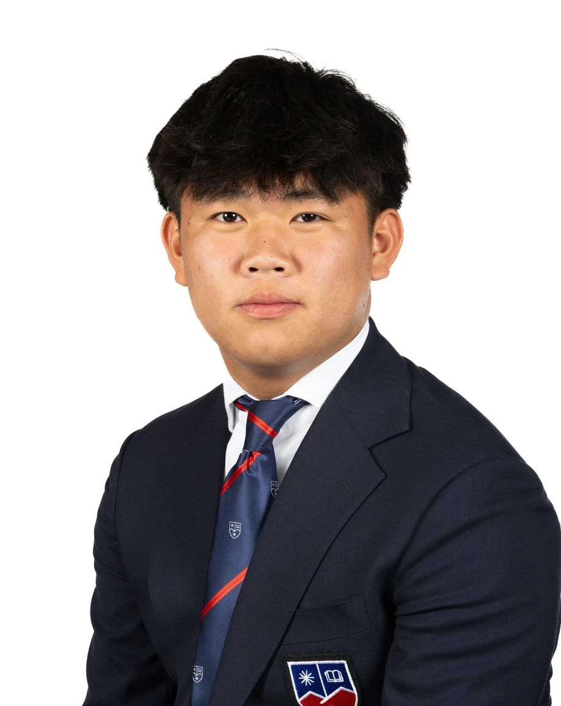

Wentao Liu
Researcher
Hi, I'm Wentao Liu. I'm 17 years old and a year 13 at LGIS. I have an academic interest in business and hospitality, but a more personal passion for economics and foreign affairs.
Team
A small group of IB students at La Garenne International School, researching the microeconomics of development in Kenya and East Africa.
Founder
Founder & Editor
Hi, I'm Vasilis Ektoras. I'm 17 years old and a year 13 student at La Garenne International School. I have an academic interest in math and finance, but a more personal passion for economics and global economies.
I founded Uchumi because the economic questions that interest me most are not the abstract ones but the ones that decide whether an ordinary business or household can actually get ahead. The initiative is my attempt to take those questions seriously with a small team of classmates, to read the evidence carefully, reason like economists, and publish short, honest research on the microeconomics of development in Kenya and East Africa.
I lead the research series and edit the papers, and I write across most of our themes, from access to capital and informality to agricultural productivity.
Researchers

Researcher
Hi, I'm Wentao Liu. I'm 17 years old and a year 13 at LGIS. I have an academic interest in business and hospitality, but a more personal passion for economics and foreign affairs.

Researcher
My name is Mariia. I am 17 years old and a year 13 student at La Garenne International School. My academic passion is history, along with English language and literature, as I want to pursue a career in law. I am also very interested in how economic factors influence corporate decisions and strategies, since I hope to specialize in corporate law.

Researcher
Hi, I'm Michael. I'm 17 years old and a year 13 at LGIS. I have an academic interest in physics and philosophy, but a more personal passion for economics and global events.
Contributors & thanks
We are grateful to the teachers, mentors, and people in Kenya who have given us their time. [Add named acknowledgements here, with permission.] If you would like to contribute an article or review a draft, see the contact page.